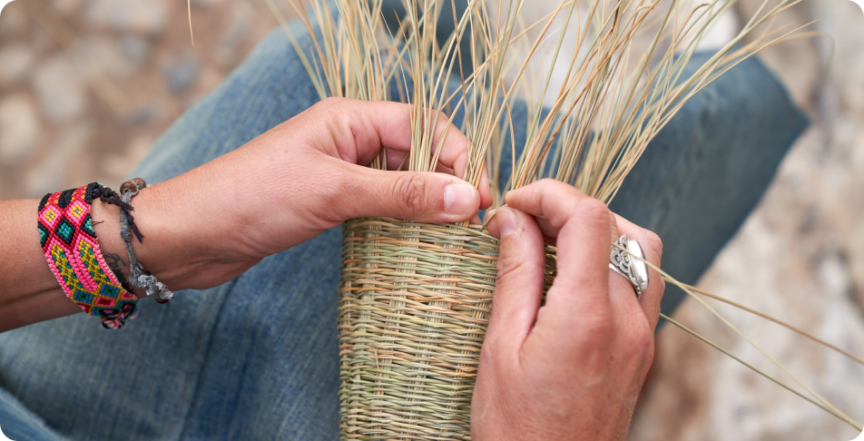

Northeastern Artisan
Cooperatives
A global initiative dedicated to preserving and promoting cooperative cultural traditions that connect communities around the world, fostering the exchange of ancestral knowledge and sustainable practices.



Brazil
Craftsmanship
2010
-8.706º S, -34.156º W